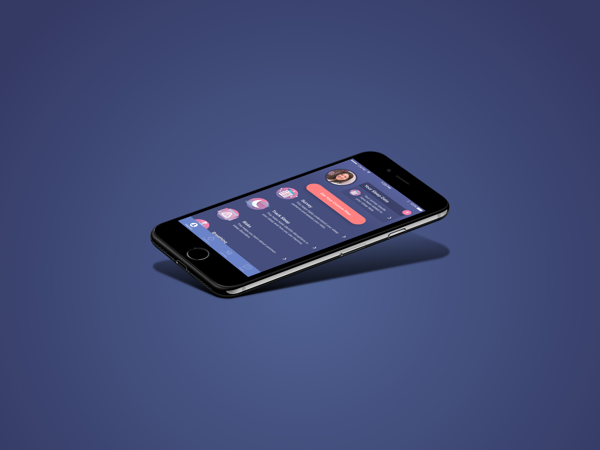
Background
Rested allows people to diagnose and find treatment for their sleep issues
Experts estimate 1 in 5 Americans suffer from sleep apnea. However, despite being more prevalent than diabetes and having serious ramifications on quality of life, more than 80% of sleep apnea patients go undiagnosed. Rested was founded to help this substantial set of people achieve healthier sleep through a completely new approach to screening, diagnosing & treating sleep issues like sleep apnea.
During my co-op placement at Rested, I worked on a variety of mobile and web projects. One impactful project I had the opportunity to work on, was redesigning the homescreen of Rested’s iOS app.
The Problem
Our target users that had serious sleep issues were not motivated to seek treatment
A core business problem that Rested was facing was that the cost to get users with a high risk for serious sleep issues to want to receive help from us was expensive and unsustainable. It was apparent there was a motivation gap for users to take action and stay committed towards improving their sleep issues. This was a problem for the business since those that did not take action were costing us money, and we needed to recoup those costs.
Objective
We needed to close the motivation gap that was causing users to not take action and receive treatment
By performing some user research, we found that some of the main reasons for this high cost of converting usersto treatment were:
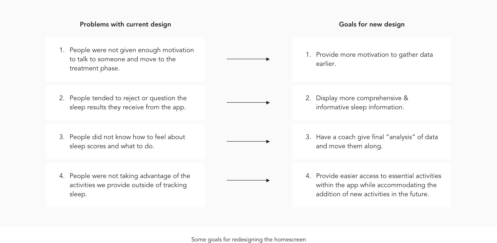
Current Design
The existing design had a significant drop-off of users from the homescreen
To get a deeper understanding of the problems with the current user experience, I analyzed the current flow users take from initial onboarding to receiving treatment. From this analysis, it became evident that the path for users to receive treatment was not the most optimal. While the current task flow seems logical, the journey for users to request treatment is long since users had to sleep one night with the app before requesting treatment.
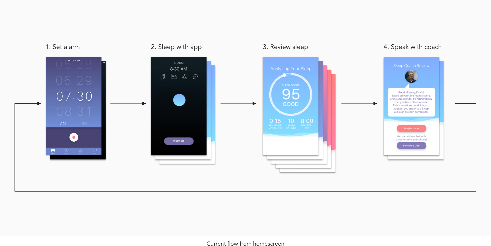
In addition to this lengthy user task flow, from our user research a significant proportion of our users stop using the app from this home screen. I hypothesized that it was because there was little information on what value the user can expect from setting the alarm and recording their sleep.
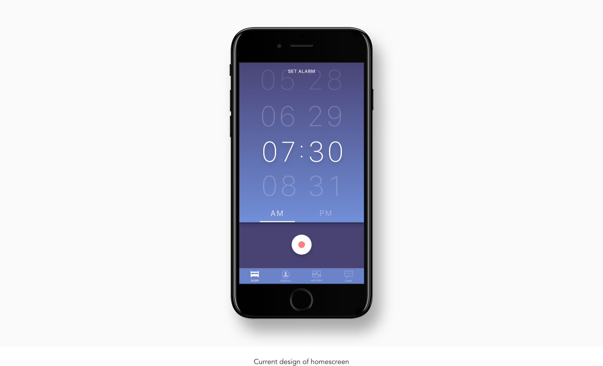
The biggest issue with the current signup process was the initial account creation screen. This screen is where the signup flow experienced the largest drop off. One hypothesis was that it was due to the confusing language and layout of this screen.
Market Research
Learning about other successful behavior change apps helped inform my future design decisions
After getting a good understanding of the problems and potential opportunities of the current design, I researched how other successful behavior change applications in the health industry motivate users to take action within their app.
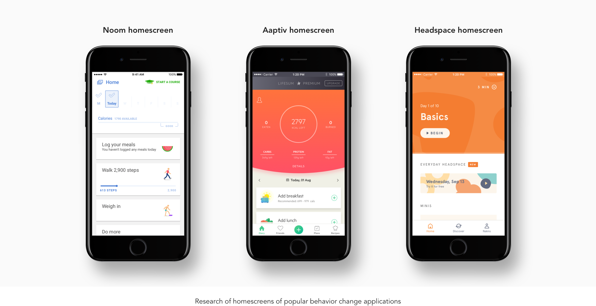
Some learnings I gained from researching existing behavior change applications in the health industry like the three above were:
Many of them incorporate a daily task list for users to come back and work on every day.
Existing apps also often provide a summary of results from the user’s previous days to motivate them to stay consistent with taking action.
User Research
Understanding users mental model for health diagnosis
Researching how successful health apps was helpful in providing insight into how users can pursue self-improvement through exercises. However, many sleep issues like sleep apnea cannot be cured with exercises alone but often times may require the use of medical equipment. It was therefore important to design a system that would provide users the opportunity to improve their sleep without giving them the false belief that their sleep issues could be cured. Therefore, I put researched how people intuitively expect to be treated for issues that can only be treated with professional help.
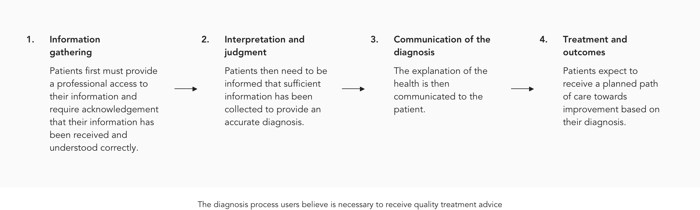
Low Fidelity Prototyping
Exploring different concepts that follow this diagnosis model
My next step was attempting to incorporate all the learnings I had made into a user interface that would make sense to the user and fulfill the goals of the project. I put together many iterations some of which are shown below.
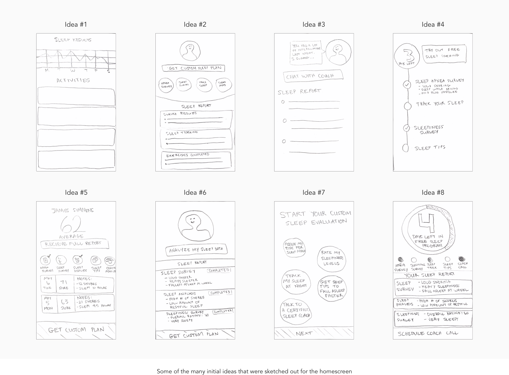
Medium Fidelity Prototyping
Iterating and combining and ideas from my initial sketches into wireframes
I then translated some of the better initial ideas I had into more defined wireframes.
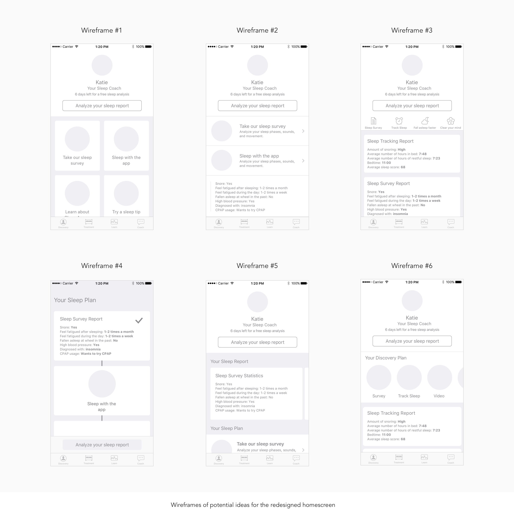
High Fidelity Prototyping
Feedback informed the design of the initial high-fidelity prototype
After gathering feedback on the above wireframes, I noted down the ideas that resonated the most with others
on
the design
team and designed the high-fidelity prototype displayed below.
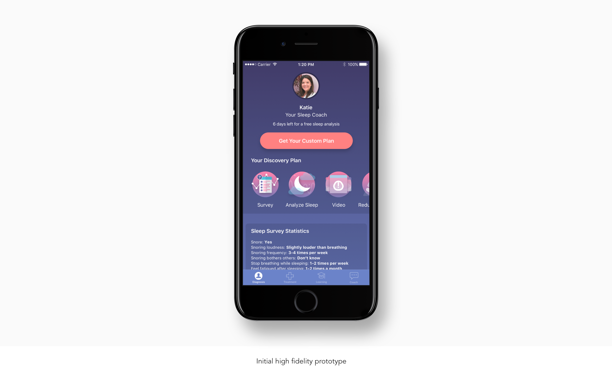
Some of the problems our team discussed with this design that were then iterated on were:
This design had a large proportion of the screen real-estate taken up by user’s sleep data which provides no action items for the user to move towards treatment.
The sleep data section also drew the user’s focus away from trying the sleep activities and scheduling a call with a sleep coach.
Finally, this list of activities did not provide enough detail to provide users the motivation to try each of the activities.
Final Design
Collaborative feedback helped prioritize which information was most important in terms of hierarchy
From the insights brought up in our design review of the high-fidelity prototype, I iterated on the design to make the most important more apparent on the homescreen. For example, this meant giving higher priority the description of each activity and lower priority the details in your sleep data.
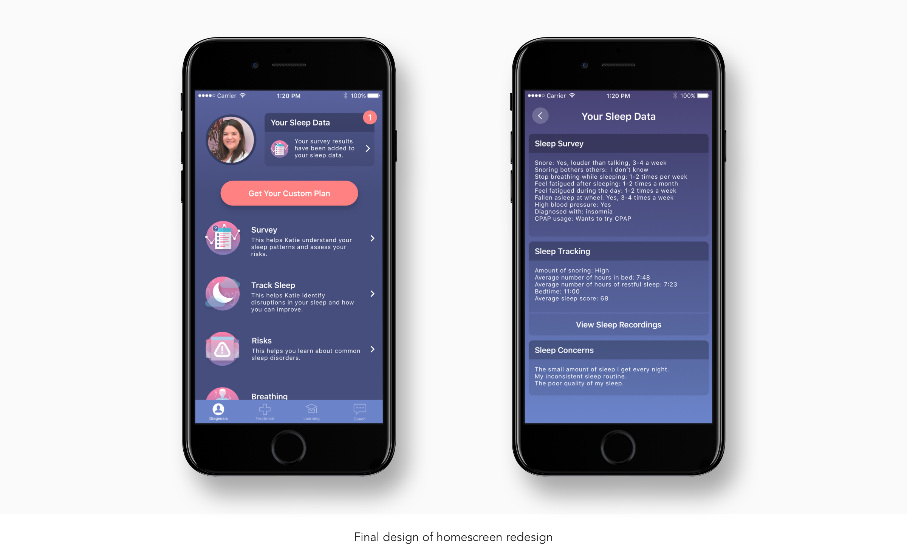
After finalizing the homescreen, I defined a final flow for how the new homescreen would interact with the rest of the app. In addition, possible edge cases like what happens after a user completes an activity were defined.
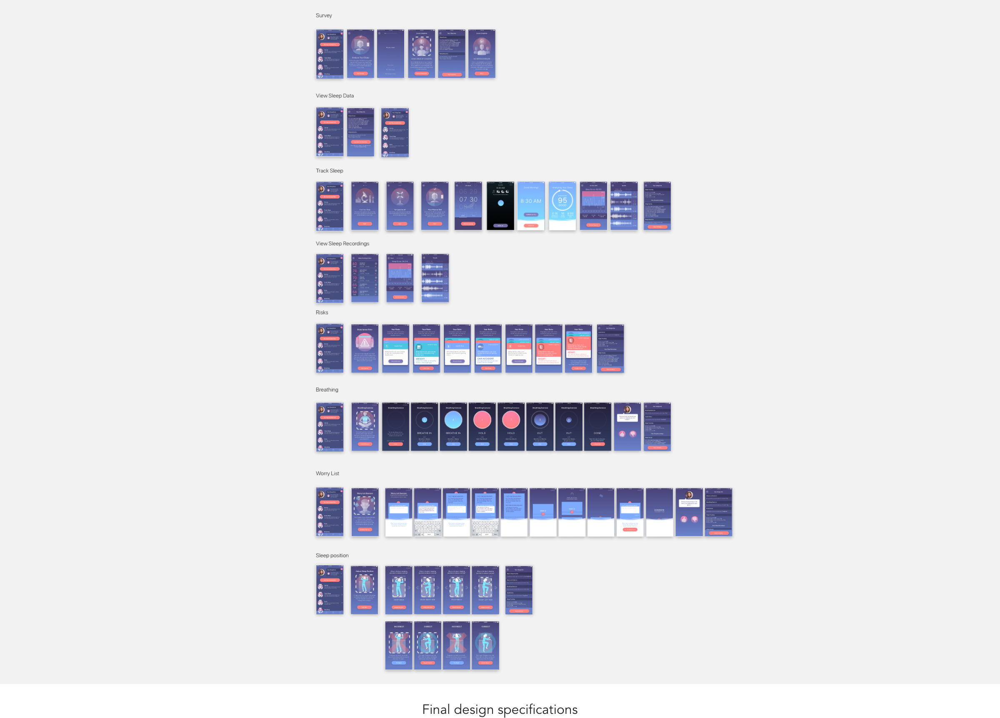
Results
Users became more convinced to move forward and address their sleep issues
In my last month at the company, the full design had been implemented and released to the App Store. From our release, we we’re able to see the impact the redesigned homescreen had on our users. From the redesign:
Our cost per opportunity had declined by 6x, from a 6x increase in the number of users wanting to talk to a sleep coach and receive help with their sleep issues.
Additionally, we hit a record of achieving the lowest cost per scheduled MD appointment ever at the company. Demonstrating users were much convinced to take action on their sleep issues.